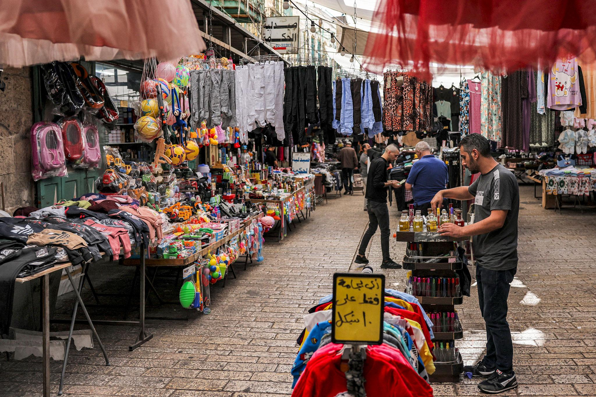
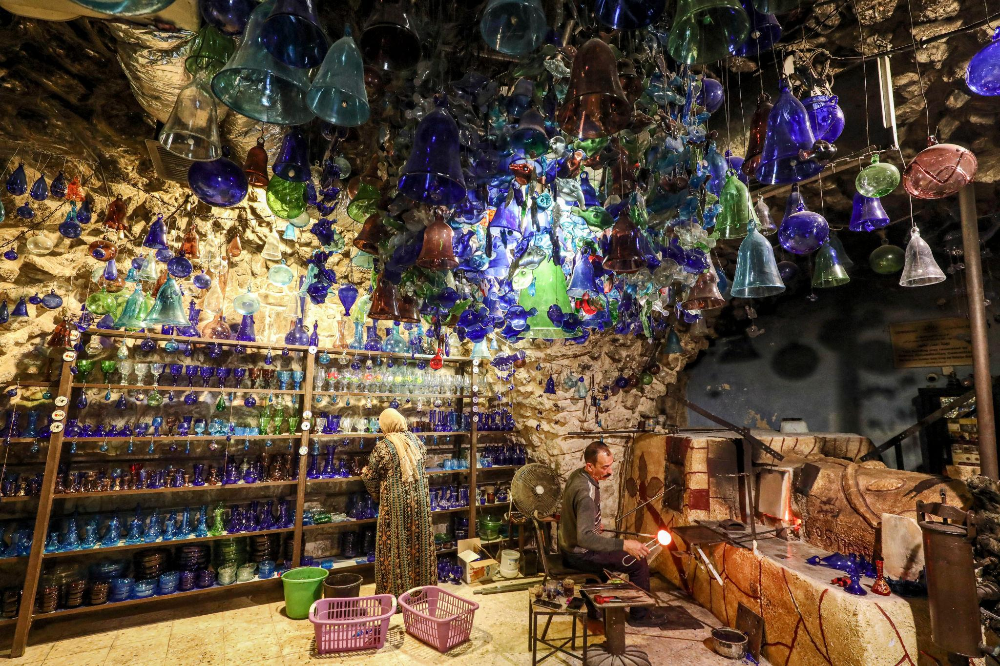

محتويات الصفحة
1. البلدة القديمة

البلدة القديمة من الأماكن اللي بتبين تاريخ الخليل بشكل واضح. فيها أزقة ضيقة ومباني حجرية ومحلات قديمة، ومجرد التمشي فيها بيعطينا فكرة عن شكل المدينة زمان وكيف حافظت على أجزاء من طابعها التراثي.
مدة الزيارة: من ساعة إلى ساعتين تقريبًا.
خطوات الجولة بالبلدة القديمة
- نبدأ بالبلدة القديمة وننتبه للطريق.
- نخصص وقتًا للسوق والتعرف على المنتجات المحلية.
- نتأكد مسبقًا من إمكانية زيارة أي ورشة أو معلم.
2. سوق البلدة القديمة

السوق مكان بنشوف فيه جانب من الحياة اليومية في المدينة. فيه محلات وأغراض مختلفة، وممكن نتمشى ونتفرج على المنتجات المحلية ونشتري تذكار إذا حبينا، مع مراعاة وقت الجولة.
مدة الزيارة: حوالي ساعة.
3. صناعة الزجاج التقليدية

الخليل معروفة بصناعة الزجاج اليدوي، وهي من الحرف القديمة اللي ارتبطت بتراث المدينة. بتتميز القطع بألوانها وأشكالها، ومن الممتع نتعرف على طريقة صنعها ونشوف المنتجات الموجودة في المحلات.
مدة الزيارة: نحو نصف ساعة إلى ساعة، حسب المكان.
4. الحرم الإبراهيمي

الحرم الإبراهيمي من أبرز المعالم الدينية والتاريخية في الخليل، وله مكانة مهمة عند كثير من الناس. قبل الزيارة لازم نتأكد من ظروف الدخول والتعليمات المتاحة في ذلك اليوم، ونحترم قدسية المكان وخصوصيته.
مدة الزيارة: حسب ظروف الدخول والوقت المتاح.